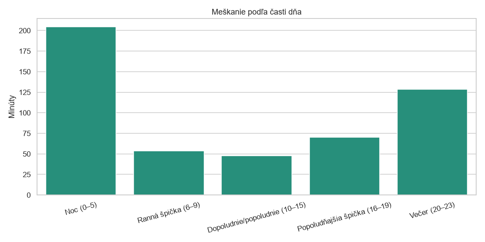
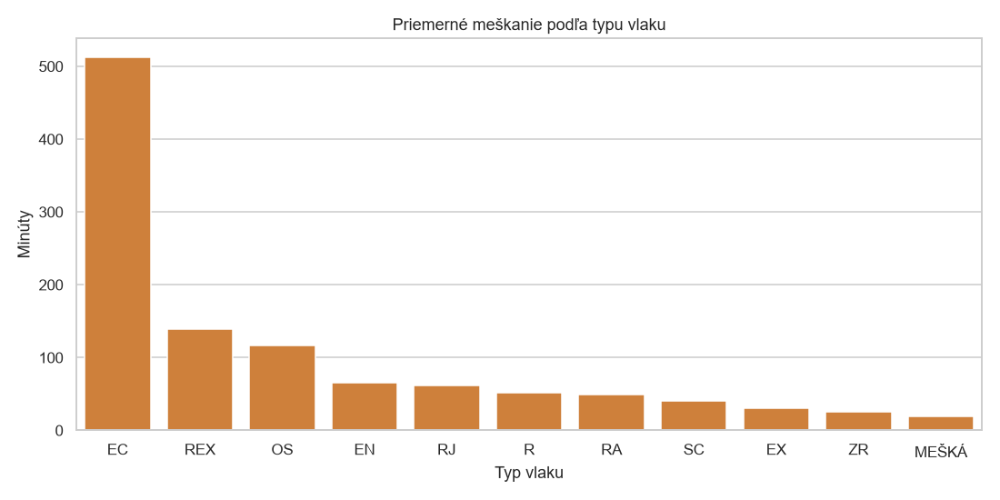
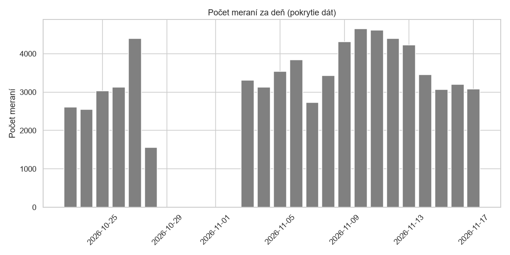

📈 Historický vývoj (denný, 7- a 30-dňový priemer, trend)

Obdobie dát: 23.10.2026 08:57 – 28.11.2026 13:37


| Zaznamov | Priemer | Median | P90 | Max | Std | Meskaju_pct | Nad5_pct | Nad15_pct | Nad60_pct | |
|---|---|---|---|---|---|---|---|---|---|---|
| Mesiac | ||||||||||
| 2026-10 | 17260 | 66.60 | 20.00 | 120.00 | 2176 | 193.21 | 96.23 | 85.27 | 67.36 | 13.24 |
| 2026-11 | 90468 | 97.37 | 23.00 | 148.00 | 2780 | 263.26 | 93.88 | 86.32 | 73.72 | 18.87 |


| Zaznamov | Priemer | Median | P90 | Max | Std | Meskaju_pct | Nad5_pct | Nad15_pct | Nad60_pct | |
|---|---|---|---|---|---|---|---|---|---|---|
| Den | ||||||||||
| Pondelok | 10649 | 73.47 | 21.00 | 128.00 | 1374 | 200.28 | 91.26 | 78.77 | 67.78 | 14.93 |
| Utorok | 16657 | 96.72 | 23.00 | 177.00 | 2085 | 241.88 | 95.16 | 86.56 | 75.22 | 17.29 |
| Streda | 16877 | 122.49 | 25.00 | 161.00 | 2779 | 329.41 | 94.56 | 86.88 | 73.85 | 24.87 |
| Štvrtok | 17662 | 79.01 | 24.00 | 134.00 | 1707 | 197.40 | 94.38 | 89.51 | 77.30 | 19.30 |
| Piatok | 20083 | 98.94 | 23.00 | 147.00 | 2780 | 277.54 | 96.86 | 89.98 | 75.83 | 16.72 |
| Sobota | 14506 | 89.80 | 21.00 | 136.00 | 2542 | 263.11 | 93.42 | 84.90 | 66.71 | 15.85 |
| Nedeľa | 11294 | 71.91 | 21.00 | 126.00 | 1491 | 194.60 | 91.54 | 80.97 | 66.81 | 14.35 |



| Zaznamov | Priemer | Median | P90 | Max | Std | Meskaju_pct | Nad5_pct | Nad15_pct | Nad60_pct | |
|---|---|---|---|---|---|---|---|---|---|---|
| Cast_dna | ||||||||||
| Noc (0–5) | 15894 | 204.01 | 22.00 | 1,087.00 | 2441 | 437.02 | 87.18 | 78.67 | 61.91 | 26.76 |
| Ranná špička (6–9) | 16669 | 55.52 | 21.00 | 76.00 | 2780 | 218.11 | 93.11 | 84.34 | 70.62 | 12.78 |
| Dopoludnie/popoludnie (10–15) | 32376 | 48.48 | 22.00 | 121.00 | 2542 | 133.24 | 95.70 | 87.27 | 74.59 | 13.50 |
| Popoludňajšia špička (16–19) | 21853 | 70.07 | 23.00 | 147.00 | 2096 | 161.00 | 96.02 | 87.25 | 75.67 | 17.32 |
| Večer (20–23) | 20936 | 128.45 | 26.00 | 486.00 | 2545 | 279.64 | 96.46 | 90.41 | 76.50 | 22.99 |


| Percentil | Minuty |
|---|---|
| P25 | 15.00 |
| P50 | 22.00 |
| P75 | 43.00 |
| P90 | 143.00 |
| P95 | 507.00 |
| P99 | 1,354.73 |
| P99.9 | 2,296.00 |
| Zaznamov | Podiel_% | |
|---|---|---|
| Kategoria | ||
| Včas (0) | 6189 | 5.75 |
| 1–5 min | 8727 | 8.10 |
| 6–15 min | 14497 | 13.46 |
| 16–30 min | 39756 | 36.90 |
| 31–60 min | 19206 | 17.83 |
| 60+ min | 19353 | 17.96 |


| Zaznamov | Priemer | Median | P90 | Max | Std | Meskaju_pct | Nad5_pct | Nad15_pct | Nad60_pct | |
|---|---|---|---|---|---|---|---|---|---|---|
| Stanica_Poloha | ||||||||||
| Barcapred 10 min. | 6 | 1,403.50 | 1,372.00 | 1,467.00 | 1467 | 49.19 | 100.00 | 100.00 | 100.00 | 100.00 |
| Barcapred 4 min. | 31 | 1,376.81 | 1,373.00 | 1,373.00 | 1491 | 21.19 | 100.00 | 100.00 | 100.00 | 100.00 |
| Barcapred 14 min. | 33 | 1,376.61 | 1,373.00 | 1,373.00 | 1491 | 20.54 | 100.00 | 100.00 | 100.00 | 100.00 |
| Barcapred 3 min. | 20 | 1,374.00 | 1,374.00 | 1,374.00 | 1374 | 0.00 | 100.00 | 100.00 | 100.00 | 100.00 |
| Barcapred 13 min. | 19 | 1,373.89 | 1,374.00 | 1,374.00 | 1374 | 0.46 | 100.00 | 100.00 | 100.00 | 100.00 |
| Barcapred 5 min. | 6 | 1,372.00 | 1,372.00 | 1,372.00 | 1372 | 0.00 | 100.00 | 100.00 | 100.00 | 100.00 |
| Bolerázteraz | 281 | 1,195.46 | 1,206.00 | 2,306.00 | 2776 | 806.84 | 100.00 | 100.00 | 99.29 | 89.32 |
| Štrbské Plesoteraz | 93 | 1,184.03 | 1,211.00 | 1,955.00 | 2172 | 577.94 | 100.00 | 100.00 | 100.00 | 100.00 |
| Kapušany pri Prešoveteraz | 337 | 1,086.75 | 1,097.00 | 1,964.00 | 2212 | 648.73 | 100.00 | 100.00 | 98.52 | 94.66 |
| Barcapred 6 min. | 5 | 1,062.80 | 1,097.00 | 1,371.60 | 1372 | 328.96 | 100.00 | 100.00 | 100.00 | 100.00 |
| Bratislava ústredná nákladná stanicateraz | 123 | 1,047.87 | 1,013.00 | 2,029.00 | 2283 | 697.79 | 100.00 | 100.00 | 100.00 | 88.62 |
| Nižnáteraz | 105 | 1,012.72 | 990.00 | 1,892.60 | 2080 | 626.79 | 100.00 | 100.00 | 100.00 | 93.33 |
| Turzovkateraz | 203 | 980.91 | 747.00 | 2,335.00 | 2777 | 892.46 | 100.00 | 100.00 | 99.01 | 84.24 |
| Barcateraz | 4920 | 680.45 | 657.00 | 1,247.00 | 1485 | 410.15 | 100.00 | 100.00 | 99.76 | 91.75 |
| Bratislava-Petržalkateraz | 742 | 639.28 | 393.00 | 1,825.50 | 2571 | 676.42 | 100.00 | 100.00 | 99.19 | 80.59 |
| Kútyteraz | 546 | 503.40 | 158.00 | 1,593.00 | 2540 | 658.96 | 100.00 | 100.00 | 92.49 | 58.42 |
| Čaňateraz | 381 | 498.06 | 123.00 | 1,576.00 | 2316 | 645.12 | 100.00 | 100.00 | 99.74 | 51.97 |
| Bratislava-Petržalkapred 11 min. | 6 | 486.00 | 32.00 | 1,410.50 | 2545 | 1,013.76 | 100.00 | 100.00 | 83.33 | 33.33 |
| Trnavateraz | 288 | 477.87 | 170.00 | 1,566.00 | 2163 | 601.71 | 100.00 | 100.00 | 95.83 | 62.50 |
| Bratislava-Petržalkapred 12 min. | 8 | 437.38 | 27.50 | 1,313.40 | 2579 | 903.95 | 100.00 | 100.00 | 87.50 | 25.00 |
| Trenčínteraz | 368 | 434.34 | 149.50 | 1,323.00 | 1953 | 529.16 | 100.00 | 100.00 | 99.46 | 61.96 |
| Dunajská Stredateraz | 61 | 419.34 | 390.00 | 870.00 | 990 | 322.38 | 100.00 | 100.00 | 98.36 | 75.41 |
| Podunajské Biskupiceteraz | 167 | 376.23 | 53.00 | 1,216.00 | 1562 | 479.76 | 100.00 | 100.00 | 99.40 | 47.90 |
| Bratislava-Petržalkapred 2 min. | 10 | 366.30 | 31.00 | 951.80 | 2579 | 811.58 | 100.00 | 100.00 | 90.00 | 30.00 |
| Košiceteraz | 1092 | 309.03 | 51.00 | 1,012.00 | 1372 | 406.55 | 100.00 | 100.00 | 97.53 | 47.44 |
| Zaznamov | Priemer | Median | P90 | Max | Std | Meskaju_pct | Nad5_pct | Nad15_pct | Nad60_pct | |
|---|---|---|---|---|---|---|---|---|---|---|
| Stanica_Poloha | ||||||||||
| 0 | 1301 | 0.00 | 0.00 | 0.00 | 0 | 0.00 | 0.00 | 0.00 | 0.00 | 0.00 |
| 1 | 1753 | 5.25 | 1.00 | 14.00 | 100 | 7.11 | 55.96 | 39.02 | 6.90 | 0.11 |
| Výh. Ružín | 59 | 7.90 | 4.00 | 19.20 | 61 | 11.53 | 86.44 | 44.07 | 15.25 | 1.69 |
| 4 | 1194 | 8.25 | 3.00 | 26.00 | 80 | 13.49 | 100.00 | 22.70 | 14.41 | 0.92 |
| 6 | 831 | 8.37 | 4.00 | 15.00 | 85 | 12.95 | 100.00 | 26.84 | 9.87 | 1.56 |
| Žilina | 74 | 8.69 | 1.00 | 25.40 | 61 | 13.32 | 54.05 | 37.84 | 22.97 | 1.35 |
| 2 | 1526 | 8.86 | 1.00 | 25.00 | 66 | 11.05 | 99.93 | 37.81 | 26.93 | 0.07 |
| 3 | 1389 | 8.90 | 2.00 | 33.00 | 100 | 13.03 | 100.00 | 29.45 | 21.45 | 0.07 |
| 9 | 478 | 9.06 | 6.00 | 11.00 | 75 | 10.72 | 100.00 | 71.34 | 7.11 | 2.09 |
| 7 | 675 | 9.09 | 5.00 | 21.00 | 87 | 12.10 | 100.00 | 32.00 | 12.00 | 1.19 |
| Dubnica nad Váhom | 31 | 9.48 | 5.00 | 26.00 | 40 | 11.60 | 64.52 | 48.39 | 25.81 | 0.00 |
| 8 | 553 | 9.48 | 6.00 | 15.80 | 80 | 12.23 | 100.00 | 61.84 | 10.13 | 2.35 |
| 5 | 1004 | 9.65 | 3.00 | 35.00 | 71 | 15.22 | 100.00 | 23.11 | 15.84 | 2.19 |
| 10 | 425 | 9.81 | 7.00 | 13.00 | 90 | 9.90 | 100.00 | 88.47 | 7.29 | 1.41 |
| 11 | 419 | 10.09 | 8.00 | 12.00 | 84 | 9.53 | 100.00 | 99.05 | 5.49 | 1.43 |

| Zaznamov | Priemer | Median | P90 | Max | Std | Meskaju_pct | Nad5_pct | Nad15_pct | Nad60_pct | |
|---|---|---|---|---|---|---|---|---|---|---|
| Vlak | ||||||||||
| Os 4010smer Makov | 141 | 1,382.47 | 1,367.00 | 2,527.00 | 2780 | 816.56 | 100.00 | 100.00 | 100.00 | 95.74 |
| Os 8102smer Štrbské Pleso | 94 | 1,194.59 | 1,216.00 | 1,964.70 | 2176 | 583.86 | 100.00 | 100.00 | 100.00 | 100.00 |
| Os 9217smer Bardejov | 113 | 1,136.29 | 1,122.00 | 2,050.00 | 2217 | 654.63 | 100.00 | 100.00 | 100.00 | 96.46 |
| REx 7781smer Bratislava-Petržalka | 144 | 1,106.15 | 1,111.00 | 2,293.00 | 2545 | 839.04 | 100.00 | 100.00 | 98.61 | 79.86 |
| Os 9108smer Prešov | 106 | 1,091.77 | 1,102.00 | 1,942.00 | 2162 | 615.23 | 100.00 | 100.00 | 100.00 | 97.17 |
| REx 7720smer Bratislava-Petržalka št. - Wien Hauptbahnhof (in Wbf | 176 | 1,066.15 | 876.00 | 2,296.00 | 2579 | 805.62 | 100.00 | 100.00 | 100.00 | 93.18 |
| Os 9209smer Bardejov | 123 | 1,056.17 | 1,012.00 | 2,028.00 | 2217 | 682.98 | 100.00 | 100.00 | 99.19 | 97.56 |
| Os 7923smer Trstená | 108 | 1,004.12 | 985.00 | 1,923.70 | 2085 | 641.28 | 100.00 | 100.00 | 98.15 | 91.67 |
| Os 1340smer Bratislava-Nové Mesto | 135 | 973.37 | 963.00 | 2,015.00 | 2284 | 731.88 | 100.00 | 100.00 | 98.52 | 81.48 |
| EC 190 HORNÁDsmer Košice | 147 | 932.63 | 866.00 | 2,050.00 | 2316 | 755.71 | 100.00 | 100.00 | 99.32 | 77.55 |
| Os 2652smer Senica | 218 | 890.04 | 611.00 | 2,319.00 | 2779 | 917.59 | 100.00 | 100.00 | 94.04 | 62.39 |
| Os 14278 NADsmer Brodské | 90 | 871.86 | 872.00 | 1,587.00 | 1726 | 520.98 | 100.00 | 100.00 | 98.89 | 93.33 |
| Os 2616smer Kúty | 204 | 815.75 | 515.00 | 2,167.00 | 2542 | 846.56 | 100.00 | 100.00 | 98.04 | 60.78 |
| Os 2624smer Kúty | 201 | 750.53 | 406.00 | 2,056.00 | 2428 | 803.05 | 100.00 | 100.00 | 99.50 | 58.21 |
| EC 189 HORNÁDsmer Čaňa št. hr. - Budapest-Keleti | 1848 | 705.05 | 727.00 | 1,257.00 | 1467 | 414.67 | 100.00 | 100.00 | 99.95 | 92.86 |
| EC 191 HORNÁDsmer Čaňa št. hr. - Budapest-Keleti | 1825 | 703.43 | 727.00 | 1,257.00 | 1467 | 413.47 | 100.00 | 100.00 | 100.00 | 92.99 |
| EC 193 HORNÁDsmer Čaňa št. hr. - Budapest-Keleti | 1789 | 701.94 | 722.00 | 1,320.40 | 1491 | 417.75 | 100.00 | 100.00 | 99.94 | 92.90 |
| Os 5315smer Trenčín | 219 | 683.96 | 613.00 | 1,565.00 | 1953 | 580.16 | 100.00 | 100.00 | 95.89 | 77.63 |
| EC 121 VALAŠSKÝ EXPRESsmer Púchov | 70 | 680.96 | 649.00 | 1,225.00 | 1349 | 391.57 | 100.00 | 100.00 | 100.00 | 95.71 |
| Os 2627smer Trnava | 206 | 574.76 | 88.00 | 1,728.00 | 2167 | 695.99 | 100.00 | 100.00 | 95.15 | 50.00 |
| Zaznamov | Priemer | Median | P90 | Max | Std | Meskaju_pct | Nad5_pct | Nad15_pct | Nad60_pct | |
|---|---|---|---|---|---|---|---|---|---|---|
| Vlak | ||||||||||
| mešká 30-59 minút | 3923 | 4.13 | 3.00 | 10.00 | 53 | 5.27 | 80.35 | 22.66 | 4.08 | 0.00 |
| mešká 60 a viac minút | 3923 | 8.38 | 2.00 | 28.00 | 100 | 15.15 | 78.61 | 27.86 | 14.33 | 1.99 |
| Ex 618 TATRAN | 3934 | 13.41 | 6.00 | 36.00 | 79 | 17.47 | 78.19 | 51.65 | 27.63 | 3.58 |
| Ex 620 TATRAN | 3934 | 14.47 | 7.00 | 30.00 | 141 | 26.58 | 70.46 | 55.24 | 22.98 | 6.41 |
| Ex 614 TATRAN | 3934 | 14.35 | 10.00 | 38.00 | 86 | 17.73 | 71.84 | 61.59 | 33.38 | 3.86 |
| Ex 610 TATRAN | 3934 | 20.71 | 11.00 | 54.70 | 152 | 28.51 | 80.68 | 65.96 | 44.59 | 9.66 |
| mešká 15-29 minút | 3923 | 8.61 | 8.00 | 14.00 | 66 | 6.48 | 94.88 | 68.70 | 8.54 | 0.03 |
| Ex 621 TATRAN | 3934 | 21.34 | 16.00 | 50.00 | 83 | 19.01 | 94.23 | 76.08 | 51.45 | 6.81 |
| mešká 5-14 minút | 3923 | 18.19 | 19.00 | 27.00 | 57 | 7.62 | 96.33 | 93.83 | 66.81 | 0.00 |
| mešká do 5 minút | 3923 | 58.48 | 62.00 | 79.00 | 93 | 19.80 | 96.97 | 96.74 | 93.27 | 55.62 |
| Os 2706smer Vrbovce št. hr. - Velká nad Veličkou | 7 | 15.00 | 15.00 | 15.00 | 15 | 0.00 | 100.00 | 100.00 | 0.00 | 0.00 |
| Os 2722smer Vrbovce št. hr. - Velká nad Veličkou | 22 | 15.00 | 15.00 | 15.00 | 15 | 0.00 | 100.00 | 100.00 | 0.00 | 0.00 |
| Os 3926smer Skalité | 5 | 15.00 | 15.00 | 15.00 | 15 | 0.00 | 100.00 | 100.00 | 0.00 | 0.00 |
| Os 4827smer Komárno | 5 | 15.00 | 15.00 | 15.00 | 15 | 0.00 | 100.00 | 100.00 | 0.00 | 0.00 |
| Os 3018smer Bratislava hlavná stanica | 5 | 15.20 | 15.00 | 15.60 | 16 | 0.45 | 100.00 | 100.00 | 20.00 | 0.00 |

| Zaznamov | Priemer | Median | P90 | Max | Std | Meskaju_pct | Nad5_pct | Nad15_pct | Nad60_pct | |
|---|---|---|---|---|---|---|---|---|---|---|
| Typ_vlaku | ||||||||||
| EC | 8061 | 519.97 | 401.00 | 1,237.00 | 2316 | 469.66 | 100.00 | 100.00 | 98.26 | 70.20 |
| REX | 5191 | 135.03 | 27.00 | 285.00 | 2579 | 341.79 | 100.00 | 100.00 | 93.12 | 22.58 |
| OS | 26552 | 107.01 | 24.00 | 142.00 | 2780 | 315.74 | 100.00 | 100.00 | 90.77 | 14.86 |
| EN | 1011 | 64.37 | 26.00 | 173.00 | 486 | 91.62 | 100.00 | 100.00 | 92.38 | 18.60 |
| RJ | 3102 | 59.01 | 31.00 | 139.90 | 1253 | 97.67 | 100.00 | 100.00 | 95.42 | 17.21 |
| R | 9153 | 51.64 | 28.00 | 133.00 | 873 | 66.36 | 100.00 | 100.00 | 93.83 | 15.85 |
| RA | 2193 | 47.82 | 27.00 | 132.00 | 259 | 53.23 | 100.00 | 100.00 | 93.39 | 14.32 |
| SC | 704 | 43.88 | 25.00 | 122.00 | 257 | 51.13 | 100.00 | 100.00 | 93.89 | 12.50 |
| EX | 31796 | 30.66 | 19.00 | 72.00 | 606 | 42.86 | 87.06 | 76.56 | 58.47 | 11.77 |
| ZR | 350 | 26.40 | 23.50 | 42.00 | 54 | 9.31 | 100.00 | 100.00 | 97.43 | 0.00 |
| MEŠKÁ | 19615 | 19.56 | 9.00 | 63.00 | 100 | 23.45 | 89.43 | 61.96 | 37.41 | 11.53 |
| Timestamp | Vlak | Stanica_Poloha | Meskanie_Text | Meskanie_Minuty |
|---|---|---|---|---|
| 2026-11-20 08:58 | Os 4010smer Makov | Turzovkapred 7 min. | + 1400 minút= 23 hod, 20 min. | 2780 |
| 2026-11-18 09:17 | Os 2652smer Senica | Bolerázpred 7 min. | + 1399 minút= 23 hod, 19 min. | 2779 |
| 2026-11-20 08:48 | Os 4010smer Makov | Turzovkateraz | + 1397 minút= 23 hod, 17 min. | 2777 |
| 2026-11-18 09:07 | Os 2652smer Senica | Bolerázteraz | + 1396 minút= 23 hod, 16 min. | 2776 |
| 2026-11-20 08:37 | Os 4010smer Makov | Turzovkateraz | + 1387 minút= 23 hod, 7 min. | 2767 |
| 2026-11-18 08:58 | Os 2652smer Senica | Bolerázteraz | + 1386 minút= 23 hod, 6 min. | 2766 |
| 2026-11-20 08:28 | Os 4010smer Makov | Turzovkateraz | + 1377 minút= 22 hod, 57 min. | 2697 |
| 2026-11-18 08:47 | Os 2652smer Senica | Bolerázteraz | + 1376 minút= 22 hod, 56 min. | 2696 |
| 2026-11-20 08:18 | Os 4010smer Makov | Turzovkateraz | + 1367 minút= 22 hod, 47 min. | 2687 |
| 2026-11-18 08:37 | Os 2652smer Senica | Bolerázteraz | + 1366 minút= 22 hod, 46 min. | 2686 |
| 2026-11-20 08:07 | Os 4010smer Makov | Turzovkateraz | + 1357 minút= 22 hod, 37 min. | 2677 |
| 2026-11-18 08:27 | Os 2652smer Senica | Bolerázteraz | + 1356 minút= 22 hod, 36 min. | 2676 |
| 2026-11-20 07:57 | Os 4010smer Makov | Turzovkateraz | + 1347 minút= 22 hod, 27 min. | 2667 |
| 2026-11-20 07:48 | Os 4010smer Makov | Turzovkateraz | + 1337 minút= 22 hod, 17 min. | 2657 |
| 2026-11-18 08:07 | Os 2652smer Senica | Bolerázteraz | + 1336 minút= 22 hod, 16 min. | 2656 |


statistiky/ (CSV)